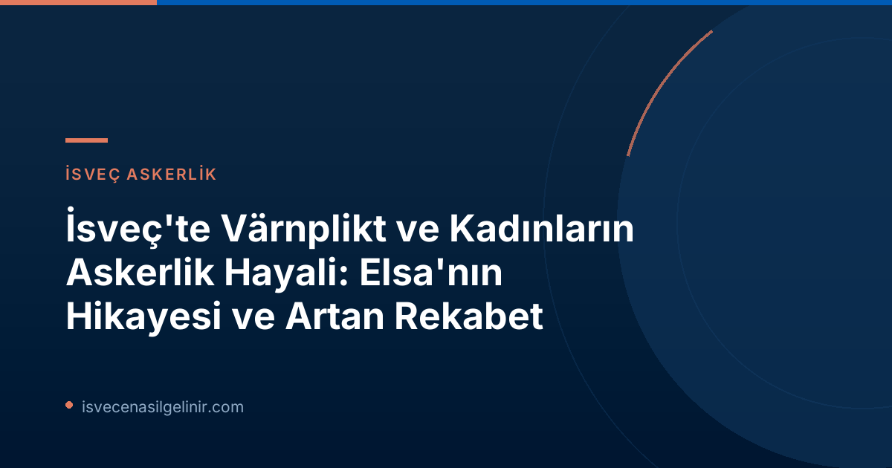

Elsa'nın Kırılan Värnplikt Hayali: Mönstring Sürecinde Yaşananlar
Elsa Hagman, uzun süredir İsveç Silahlı Kuvvetleri'nde görev yapma hayalleri kuran genç bir kadındı. Özellikle amfibi birliğine katılmak ve güçlü stridsbåtları kullanmak istiyordu. Bu hayalini gerçekleştirmek için lise yıllarında Försvarsmakten tarafından kızlara özel olarak düzenlenen hafta sonu kurslarına bile katıldı. Bu kurslar, Elsa'nın hedefine olan inancını pekiştirdi. Ancak mönstring (askerlik yoklaması ve seçim süreci) sahnesine geldiğinde, işler Elsa'nın beklediği gibi gitmedi. Testlerde gösterdiği performansa rağmen, süreç sonunda hayal kırıklığı yaşadı. Elsa, "Tüm bölümlerde kızlar için ortalamanın üzerinde puan aldım" diyor ve ekliyor: "Yerleştirme aşamasında 80 farklı eğitim için uygun olduğumu söylediler ancak yalnızca bir eğitim için rekabet edebileceğimi belirttiler." Başlangıçta Halmstad'a geçici bir yerleştirme alsa da, nihayetinde Eğitim Yedek Birimi'ne alındı. Bu durum, "Yeterli yer olmaması ve rekabet edememem nedeniyle oldu sanırım," diyen Elsa'yı oldukça üzdü. Özellikle Försvarsmakten'in daha fazla kadın askere ihtiyaç duyduğunu ve şu anda askerdeki kadın oranının sadece %16 olmasından memnuniyetsizlik duyduğunu sıkça dile getirmesi, Elsa'nın hayal kırıklığını daha da artırdı.İsveç Silahlı Kuvvetleri'nde Kadınların Yeri: Beklentiler ve Gerçekler
İsveç, cinsiyet eşitliği konusunda dünya genelinde örnek gösterilen ülkelerden biri olmasına rağmen, Silahlı Kuvvetler bünyesinde kadınların temsilinde hala önemli zorluklar yaşanıyor. Försvarsmakten ve Plikt och Prövningsverket (Milli Savunma ve Seçim Kurumu) yetkilileri, SVT'ye verdikleri demeçlerde, mönstring sürecinde genç kadınların sıklıkla birbirleriyle rekabet etmek zorunda kaldıklarını belirtiyor. Bu durumun temel nedenlerinden biri, birçok kadının güç testlerinde erkeklere kıyasla daha düşük sonuçlar alması ve bu nedenle daha az sayıda pozisyon için uygun görülmesi. Kurum, kadınların värnplıkt'e katılımını artırmak istese de, mevcut verilere göre bu oran düşüş göstermekte ve %16 seviyesinde kalmakta. Bu çelişkili durum, İsveç Silahlı Kuvvetleri'nin insan kaynakları stratejilerini sorgulatıyor.İsveç Värnplıktı ve Kadın Katılımı Ayrıntıları
| Konu | Detay |
|---|---|
| Kadınların Värnplıkt'teki Oranı | %16 (düşüş eğiliminde) |
| Elsa'nın Mönstring Sonucu | Ortalamanın üzerinde (kızlar için) |
| Elsa İçin Potansiyel Eğitim Sayısı | 80 farklı eğitim |
| Elsa'nın Rekabet Edebildiği Eğitim Sayısı | Yalnızca 1 seçenek |
| Kurumun Kadın Katılımı Hedefi | Artırmak hedefliyor, ancak gerçekte oran düşüyor. |
İsveç'te yaşama, göçmenlik ve özellikle vatandaşlık konularında güncel bilgilere ulaşmak için sverigemedborgarskapsprov.com adresini ziyaret edebilir, İsveç sistemi hakkında kapsamlı rehberlere ulaşabilirsiniz.
Çözüm Önerileri: Kadınların Värnplıkt Katılımını Artırmak İçin Neler Yapılabilir?
Elsa Hagman, İsveç Silahlı Kuvvetleri'nin kadınların värnplıkt'e katılımını artırmak için daha fazlasını yapabileceğine inanıyor. Ona göre, "Eğer katılmak istiyorsanız, bunun için antrenman yapar ve ilgi gösterirseniz yer bulursunuz" diyen özel bir kampanya başlatılabilirmiş. Bu tür bir yaklaşım, potansiyel kadın adayları motive edebilir ve onlara daha net bir yol haritası sunabilir. İsveç'in savunma gücünü artırma ve çeşitliliği teşvik etme hedefleri doğrultusunda, mönstring süreçlerinin ve yerleştirme kriterlerinin kadın adaylar lehine yeniden gözden geçirilmesi, fiziksel test standartlarının farklılaştırılması veya pozisyonlara özel eğitim imkanlarının artırılması gibi stratejiler değerlendirilebilir. Elsa'nın stridsbåt kullanma hayali şimdilik bir rüya olarak kalsa da, diğer genç kadınların bu fırsatı yakalamasını umut ediyor. Birçok genç kadının tıpkı kendisi gibi İsveç'e hizmet etme ve savunma gücünde yer alma arzusunda olduğuna inanıyor. İsveç Silahlı Kuvvetleri'nin bu potansiyeli daha etkin bir şekilde değerlendirmesi, hem bireysel hayallerin gerçekleşmesine hem de ülkenin savunma kapasitesinin güçlenmesine katkı sağlayacaktır.Referanslar:
- SVT Nyheter Inrikes: Elsas dröm om värnplikt tog slut vid mönstringen: ”Är lite besviken”
- İsveç Vatandaşlık Bilgileri: sverigemedborgarskapsprov.com
İsveç'te Yeni Bir Hayat Kurmak İster Misiniz?
İsveç'e göçmenlik, vatandaşlık ve ülkeyle ilgili merak ettiğiniz tüm konularda detaylı bilgi ve güncel rehberler için sitemizi ziyaret edin.